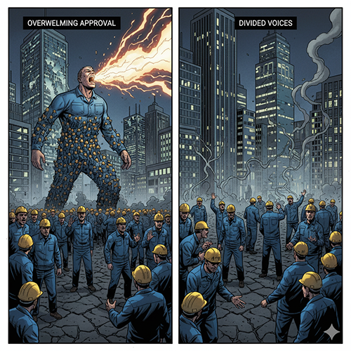
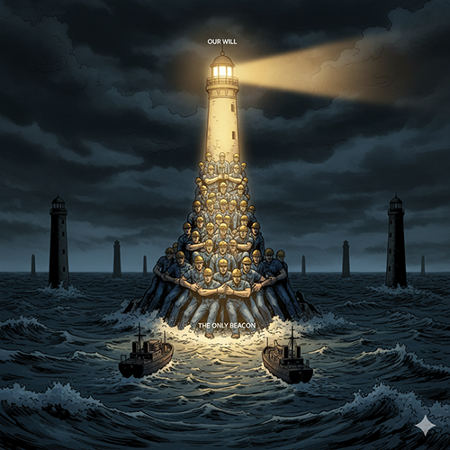
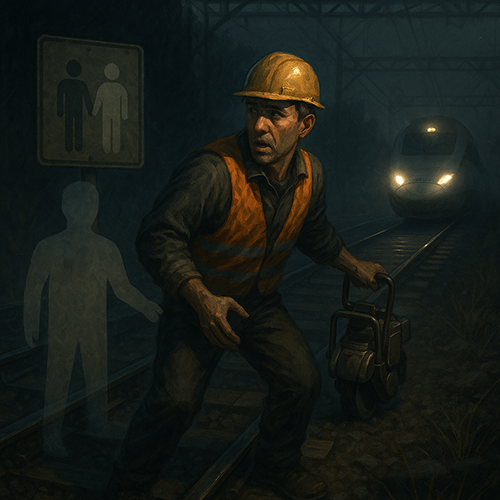
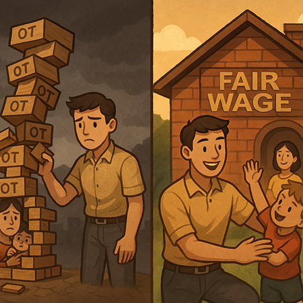
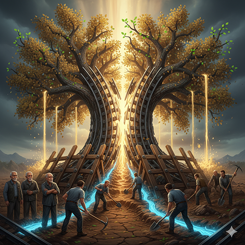
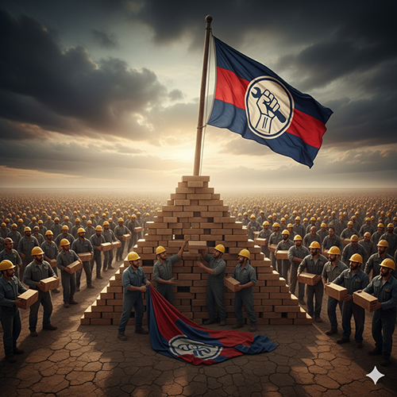
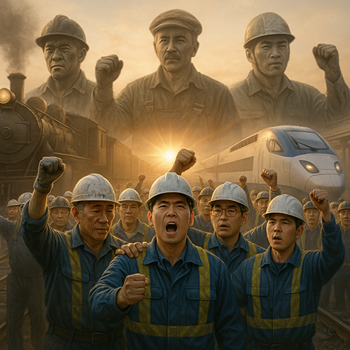

지난 여정을 통해 우리는 KTX-SRT 분리 정책의 허구성과 그 대가를 확인했고, 단결이 무너진 현장의 참혹함도 목도했습니다. 이제 마지막 질문만이 남았습니다. “그래서 우리는 지금 무엇을 해야 하는가?” 이 질문 앞에서 더 이상 망설이거나 침묵해서는 안 됩니다. 불의에 눈감고 각자도생의 길을 가는 ‘침묵’을 택할 것인가, 아니면 동지의 손을 맞잡고 우리의 미래를 우리 손으로 되찾는 ‘단결’을 택할 것인가.
곧 10월과 11월에 걸친 투쟁의 막이 오릅니다. 10월 15일 임시 대의원 대회(임시 대대)에서 KTX-SRT 통합을 위한 ‘쟁의발생 결의’가 이루어지고, 11월 4일부터 7일까지 쟁의행위 찬반투표가 진행되는 이 모든 과정은 하나의 거대한 흐름입니다.
이 과정에서 우리의 투표율과 찬성률은 정부와 사측을 향한 가장 강력하고 직접적인 ‘전략적 무기’입니다. 90%가 넘는 압도적인 찬성률은 “우리는 한마음 한뜻으로 뭉쳐 있으며, 요구가 관철될 때까지 결코 물러서지 않을 것”이라는 명확한 경고 메시지입니다. 반대로, 찬성률이 아슬아슬하다면 사측은 즉시 ‘철도노조의 동력이 약하고 내부 의견이 갈리는구나. 조금만 버티면 제풀에 무너지겠구나.’라고 판단할 것입니다.
다른 노조의 불참 속에서 우리의 단결은 더욱 중요합니다. 작년 총력결의대회에서 타 노조 참가율이 0%였던 현실은, 오직 우리만이 철도의 공공성을 지키는 최후의 보루임을 증명합니다. 우리의 압도적인 의지만이 저들의 계산을 무너뜨릴 수 있습니다.
특히 젊은 조합원 동지들께 간곡히 호소합니다. ‘나 하나쯤 빠져도 괜찮겠지’라고 생각할 수도 있습니다. 그러나 지금 우리가 싸우려는 문제들은 바로 당신의 미래와 가장 밀접하게 연결되어 있습니다.
첫째, 우리는 ‘안전한 일터’를 위해 싸웁니다. KTX-SRT 통합을 통해 비효율을 걷어내고 재정을 정상화하는 것은, 만성적인 인력 부족을 해결하고 안전 투자를 확대할 유일한 길입니다. 이는 오늘 당장 선로 위에서 일하는 당신과 동료의 생명을 지키는 일입니다.
둘째, 우리는 ‘안정적인 임금’을 위해 싸웁니다. 초과근무에 의존하지 않고도 미래를 설계할 수 있는 정상적인 임금 구조를 만드는 것은 당신 삶의 질을 결정하는 문제입니다.
셋째, 우리는 ‘지속가능한 미래’를 위해 싸웁니다. 철도의 공공성을 지키는 것은 우리가 평생을 바쳐 일할 직장의 미래를 지키는 일입니다. 분열과 비효율 속에서 철도가 몰락한다면 가장 큰 피해자는 바로 젊은 세대인 여러분이 될 것입니다.
말은 이제 충분합니다. 이제는 행동으로 우리의 의지를 보여줄 때입니다. 승리를 위한 로드맵은 분명합니다.
첫째, 10월 16일, 철도노동자 총력결의대회로 집결합시다. 우리의 함성이 서울 도심을 가득 메우고, 우리의 거대한 대오가 거리를 가득 메울 때, 비로소 세상은 우리의 목소리에 귀를 기울일 것입니다. 우리의 거대한 단결을 눈으로 보여줍시다.
둘째, 11월 4일부터 7일까지, 쟁의행위 찬반투표에 압도적으로 참여합시다. 임시 대의원 대회에서 우리의 대표자들이 투쟁의 깃발을 들기로 결의했다면, 이제 조합원 전체가 그 깃발 아래 모여들 차례입니다. 망설이는 동료가 있다면 손을 내밀어 우리가 겪는 어려움과 꿈꾸는 미래에 대해 이야기하고, 반드시 함께 투표소로 향해주십시오.
존경하는 조합원 동지 여러분. 우리의 미래는 정부나 사측이 결코 지켜주지 않습니다. 지난 120년 한국 철도의 역사가 증명하듯, 철도 노동자의 존엄과 철도의 공공성은 언제나 우리의 피와 땀, 그리고 단결된 투쟁을 통해서만 지켜져 왔습니다. 이제 다시 한번 그 자랑스러운 역사를 이어갈 시간이 왔습니다. 우리의 미래는, 우리 손으로 되찾읍시다! 투쟁!
목차로 돌아가기